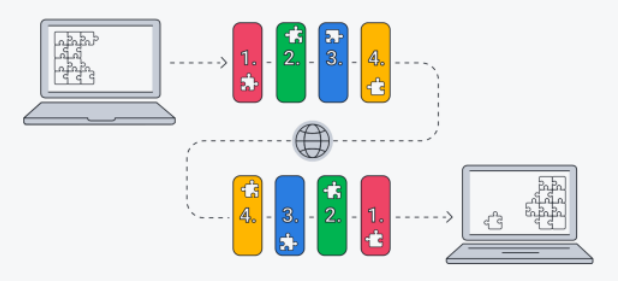
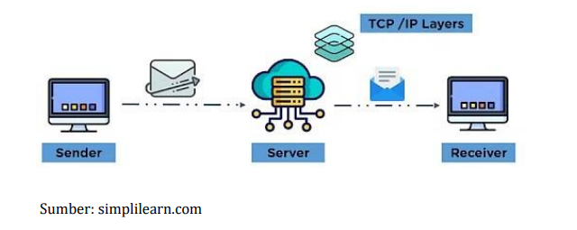

TCP/IP adalah singkatan dari Transmission Control Protocol/Internet Protocol dan merupakan rangkaian protokol komunikasi yang digunakan untuk menghubungkan perangkat jaringan di internet. TCP/IP juga digunakan sebagai protokol komunikasi dalam jaringan komputer pribadi (intranet atau ekstranet).
TCP/IP Model dirancang dan dikembangkan oleh Departemen Pertahanan Amerika Serikat pada tahun 1960-an dan didasarkan pada protokol standar. Model TCP/IP adalah versi ringkas daro model OSI. Model ini berisi empat lapisan, tidak seperti OSI Model yang memiliki tujuh lapisan.
Adapun 4 lapisan yang ada pada TCP/IP adalah Application layer, Transport layer, Network layer, dan Physical
TCP/IP menentukan cara data dipertukarkan melalui internet dengan menyediakan komunikasi ujung ke ujung yang mengidentifikasikan bagaimana data harus dipecah menjadi paket-paket, dialamatkan, ditransmisikan, diarahkan dan diterima di tempat tujuan.
TCP/IP memerlukan sedikit manajemen pusat dan dirancang untuk membuat jaringan dapat diandalkan dengan kemampuan untuk memulihkan secara otomatis dari kegagalan perangkat di jaringan.
Dua protokol utama (TCP dan IP) dalam model ini melayani fungsi tertentu.
TCP mendefinisikan bagaimana aplikasi dapat membuat saluran komunikasi di seluruh jaringan. Selain itu, juga mengatur bagiamana sebuah pesan dirakit menjadi paket-paket yang lebih kecil sebelum kemudian dikirim melalui internet dan disusun kembali dalam urutan yang benar di alamat tujuan.
IP mendefinisikan cara menangani dan merutekan setiap paket untuk memastikan paket tersebut mencapai tujuan yang benar. Setiap komputer gateway di jaringan memeriksa alamat IP ini untuk menentukan ke mana harus meneruskan pesan.
Subnet mask memberi tahu komputer, atau perangkat jaringan lain, bagian mana dari alamat IP yang digunakan untuk mewakili jaringan dan bagian mana yang digunakan untuk mewakili host, atau komputer lain, di jaringan.
Network Address Translation (NAT) adalah metode virtualisasi alamat IP yang membantu meningkatkan keamanan dan mengurangi jumlah alamat IP yang dibutuhkan organisasi.
TCP/IP model secara umum meliputi:
Hypertext Transfer Protocol (HTTP) menangani komunikasi antara server web dan browser web.
HTTP Secure menangani komunikasi yang aman antara server web dan browser web.
File Transfer Protocol menangani komunikasi antara server web dan browser web.
Komputer
TPC/IP adalah protokol hierarkis yang terdiri dari modul atau lapisan interaktif, dan masing-masing menyediakan fungsionalitas tertentu.
TCP/IP Model terdiri dari 4 lapisan, yakni:
Application Layer
Transport Layer
Network Layer
Physical Layer
Application layer adalah lapisan paling atas dalam TCP/IP Model. Lapisan Application ini bertanggung jawab untuk komunikasi node-to-node dan mengontrol spesifikasi antarmuka pengguna. Beberapa protokol yang ada pada lapisan ini adalah: HTTP, HTTPS, FTP, TFTP, Telnet, SSH, SMTP, SNMP, NTP, DNS, DHCP, NFS, X Window, dan LPD.
Application layer memungkinkan pengguna untuk berinteraksi dengan aplikasi. Ketika satu protokol Application layer ingin berkomunikasi dengan Application layer lain, ia akan meneruskan datanya ke Transport layer.
Jika dibandingkan dengan OSI Model, lapisan ini melakukan fungsi tiga lapisan teratas dari OSI Model, yakni Application, Presentation dan Session Layer.
Transport layer bertanggung jawab untuk memelihara komnikasi ujung ke ujung di seluruh jaringan. TCP menangani komunikasi antara host dan menyediakan kontrol aliran, multiplexing, dan kehandalan.
Dua protokol utama yang ada di lapisan ini adalah:
Transmission Control Protocol (TCP) - Menyediakan komunikasi yang andal dan bebas kesalahan. Protokol ini melakukan pengurutan dan segmentasi data. TCP memiliki fitur pengakuan dan mengontrol aliran data melalui mekanisme kendali aliran. Protokol ini termasuk protokol yang sangat efektif tetapi memiliki banyak overhead karena fitur tersebut. Peningkatan biaya overhead dapat menyebabkan peningkatan biaya.
User Datagram Protocol (UDP) - Protokol yang memiliki tugas khusus, dimana protokol ini cocok jika aplikasi Anda tidak memerlukan transportasi yang andal karena sangat hemat biaya. Hal ini karena UDP tidak memiliki fitur kendali aliran pengakuan yang bisa menyebabkan overhead. Selain itu, berbeda dengan TCP, yang merupakan protokol berorientasi koneksi, UDP tidak memiliki koneksi.
Network layer biasa juga disebut sebagai Internet layer. Lapisan ini juga menangani paket dan menghubungkan jaringan independen untuk mengangkut paket melintasi batas jaringan.
Protokol yang ada di Network Layer adalah IP dan Internet Control Message Protocol.
Berikut adalah fungsi dari masing-masing protokol tersebut:
IP - singkatan dari Internet Protocol. Protokol ini bertanggung jawab untuk mengirimkan paket dari host sumber ke host tujuan dengan melihat alamat IP di header paker. IP memiliki 2 versi: IPv4 dan IPv6. IPv4 adalah salah satu jenis IP yang digunakan sebagian besar situs web saat ini. IPv6 berkembang belakangan ini untuk mengatasi alamat IPv4 yang terbatas jumlahnya jika dibandingkan dengan jumlah pengguna.
ICMP - singkatan dari Internet Control Message Protocol. protokol ini dienkapsulasi dalam datagram IP dan bertanggung jawab untuk menyediakan host dengan informasi tentang masalah jaringan.
Physical layer sering disebut juga sebagai Network Interface layer atau Data Link layer. Lapisan ini merupakan lapisan terbawah dari TCP/IP Model dan bertugas mencari pengalamatan perangkat keras dan protokol yang memungkinkan tranmisi fisik data.
Physical layer terdiri dari protokol yang beroperasi hanya pada link, yakni sebuah komponen jaringan yang menghubungkan node atau host ke dalam jaringan.
Protokol di lapisan ini di antaranya Ethernet untuk jaringan area lokal dan ARP (Address Resolution Protocol). ARP adalah protokol yang bertanggungjawab menemukan alamat perangkat keras suatu host dari alamat IP yang diketahui. ARP memiliki beberapa jenis seperti Reverse ARP, Proxy ARP, Gratuitous ARP dan Inverse ARP.
TCP/IP menggunakan model komunikasi client-server di mana pengguna atau mesin (klien) diberikan layanan, seperti mengirim halaman web, oleh komputer lain (server) dalam jaringan.
Secara kolektif, rangkaian protokol TCP/IP diklasifikasikan sebagai stateless, yang berarti setiap permintaan klien dianggap baru karena tidak terkait dengan permintaan sebelumnya. Stateless membebaskan jalur jaringan sehingga dapat digunakan terus-menerus.
Namun, lapisan transport TCP/IP adalah stateful. Tugasnya mentransmisikan satu pesan, dan koneksinya tetap di tempatnya sampai semua paket dalam pesan telah diterima dan dipasang kembali di tujuan.
Kelebihan dan keunggulan menggunakan model TCP/IP adalah sebagai berikut:
Membantu membangun koneksi antara berbagai jenis koputer
Bekerja secara independen dari OS
Mendukung banyak routing protocol
Menggunakan arsitektur client-server yang sangat terukur
Dapat dioperasikan secara mandiri
Ringan dan tidak membebani jaringan atau komputer.
TCP/IP dan OSI Model adalah protokol jaringan komunikasi yang paling banyak digunakan. Perbedaan utamanya adalah OSI merupakan model konseptual yang tidak praktis digunakan untuk komunikasi. OSI mendefinisikan bagaimana aplikasi dapat berkomunikasi melalui jaringan. Sebaliknya, TCP/IP, banayk digunakan untuk membangun hubungan dan interaksi jaringan.
Protokol TCP/IP menetapkan standar di mana internet dibuat, sedangkan model OSI memberikan pedoman tentang bagaimana komunikasi harus dilakukan. Oleh karena itu, TCP/IP adalah model yang lebih praktis.
Model TCP/IP dan OSI memiliki persamaan dan perbedaan. kesamaan utama adalah dalam cara mereka dibangun kerena keduanya menggunakan lapisan, dimana TCP/IP hanya terdiri dari empat lapisan, sedangkan model OSI terdiri dari tujuh lapisan.
Perbedaan antara model TCP/IP dan model OSI adalah sebagai berikut:
TCP/IP hanya menggunakan satu lapisan (application layer) untuk mendefinisikan fungsionalitas lapisan atas, sedangkan OSI menggunakan tiga lapisan (application, presentataion, dan session).
TCP/IP menggunakan satu lapisan (physical layer) untuk mendefinisikan fungsionalitas lapisan bawah, sedangkan OSI menggunakan dua lapisan (Physical dan Data link layer).
Ukuran header TCP/IP adalah 20 byte, sedangkan header OSI adalah 5 byte.
TCP/IP adlah standar berorientasi prtokol, sedangkan OSI adalah model generik berdasarkan fungsionalitas setiap lapisan.
TCP/IP mengikuti pendekatan horizontal, sedangkan OSI mengikuti pendekatan vertikal.
Dalma TCP/IP, protokol dikembangkan terleih dahulu, dan kemudian modelnya dikembangkan. Di OSI, model dikembangkan terlebih dahulu, dan kemudian protokol di setiap lapisan dikembangkan.
TCP/IP membantu membangun koneksi antara berbagai jenis komputer, sedangkan OSI membantu menstandarisasi router, switch, motherboard, dan perangkat keras lainnya.